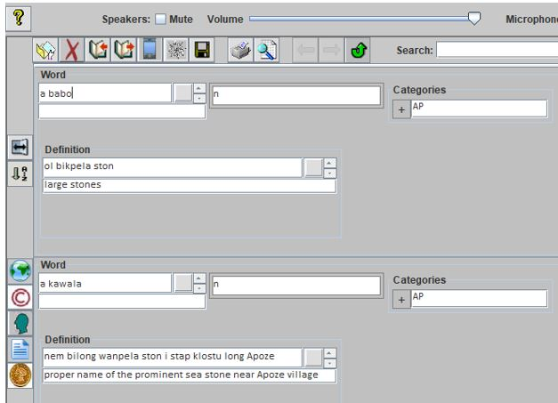

Importing XML Spreadsheet Dictionaries into the Wolf Application
Many linguists create indigenous dictionaries using Microsoft Excel. The purpose of this document is to show how one can easily import these into the WOLF dictionary application. The steps for doing this follow:
First Step: Alter the first row of the Excel dictionary.
- Row one of the spreadsheet maps EXCEL columns into WOLF fields. The first step is to alter these column headings using the rules listed below.
Column headings need to be in this specific format
FIELD:CODE:DIALECT:LANGUAGE_NAME:APPLY where
FIELD = The specific WOLF field name
CODE = The three digit ISO language code
DIALECT = A one or two digit abbreviation for the language dialect
LANGUAGE_NAME = A user readable name for the language
APPLY = "w" or "d," to indicate if this field applies to a word or definition
- The meanings of FIELD, CODE, DIALECT, LANGUAGE_NAME, and APPLY
- FIELD
- Valid WOLF field names that show vertically in the WOLF Layout are:
Word, Definition, Example, and Row Comment. WOLF displays Row Comments in a single display box. The other of these fields are displayed with one row for each language.
- Valid WOLF field names that show in columns, but with a row for each language in the WOLF layout are: Compare, Encyclopedia Info, Gloss, Lexical Function, References, Reversals, Restrictions, Usage, and Variants
- Valid WOLF field names that show in columns, but with a display row for each language in the WOLF layout are: Annotations, Antonyms, Category, Comment, Etymology, Language Links, Main Entry, Morphemes, Refer To, Spelling, Subentry, Synonyms, Table, Thesaurus
- Valid WOLF fields for parts of speech can be customized to display in six different ways. The field names for these are: Ontology, Ontology-C, Ontology-PC, Ontology-P/C, Ontology-C/D, Ontology-PC/D.
- CODE
The ISO 3 letter language code. For example, "eng," is the standard code for English. This field is required for Excel column A. It will be the default for other columns. Those fields that contain translation rows must specify a language code if they do not want to default to the default.
- DIALECT
A one- or two-digit abbreviation for a specific dialect of the language. For example, "us" might be used to specify American English. This entry is optional
- LANGUAGE_NAME
This is a human readable name of the language. For example, for CODE "eng," the name English would be used for LANGUAGE_NAME. This entry is optional.
- APPLY
The possible values for this field are "d" or "w" indicating respectively whether the field applies to a definition or a word. If a word specifies more than a single definition, the field will be applied to the last specified definition (in an earlier Excel column). If not specified, "w" is the default.
- Additional Notes
- Word must be specified in Excel Column A. Only one word on a row of the spreadsheets. Additional Word entries are allowed, but they must contain different CODE values.
- Wolf has default column widths and fonts that it uses for its display. These can be overridden using Excel width and font facilities
- Examples of Excel Row 1 apexifications
English word translated into Tolowa with a definition in each lesson and an ontology displayed on two rows vertically (Ex: n for noun)
| 1 |
Word:eng:us:English |
Word:tol |
Definition:tol |
Definition |
Ontology-P/C:::d |
Kala word with definitions in Kala and English. The Ontology data is displayed on a single row. Categories is used to specify a village location
| 1 |
Word:kal:Kala |
Definition:eng:English |
Definition:kal |
Ontology:::w |
Categories |
Second Step: Use the Excel save as option and specify: Excel spreadsheet 2003 (.xml) option
Third Step: Assuming the Wolf application is installed, click on its import option. It is the third ion from the top left. It looks like an open book with an arrow pointing in. Browse to where you stored the dictionary XML file and select it.
Fourth Step: After the import, an icon will appear for each language on the bottom wall. Clicking once turns an icon read. Clicking again turns it green. The green icon is the gloss language. Those that are red are translation languages.
Final note: The default location that WOLF uses for storing its dictionaries is in the Acorns folder within Documents. A sample snippet of a successfully imported dictionary is shown below.
